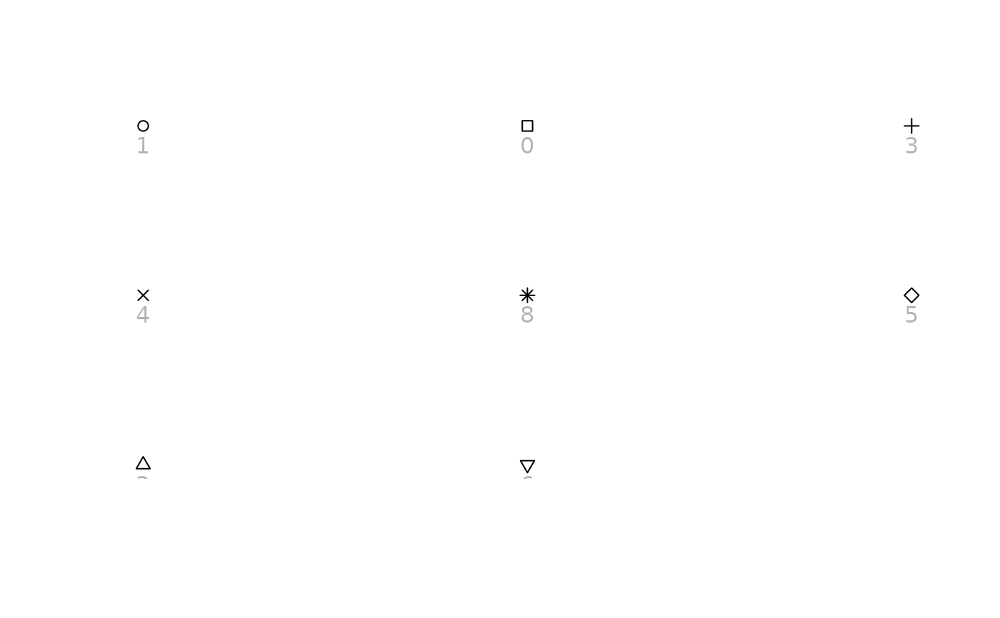

Shape palettes used by Tableau.
Usage
tableau_shape_pal(
palette = c("default", "filled", "proportions", "kpi", "arrows", "thin-arrows",
"gender", "weather", "bug-tracking"),
unicode = FALSE
)Arguments
- palette
Palette name. One of
"default","filled","proportions","kpi","arrows","thin-arrows","gender","weather"or"bug-tracking".- unicode
If
TRUE, return pch codes derived from Unicode glyphs, which exist for every shape of the palette. They are drawn by the device font, so they render as blank boxes in a font without coverage and at unrelated sizes in most fonts; the font fromregister_shapes_font()has the shapes of this palette at a common size. IfFALSE, return base pch codes, which every font can draw but which exist only for some shapes. The default depends on the palette.
Value
A palette function. It takes the number of shapes n and returns an integer vector of n
shape (pch) codes, and can be used as the palette argument of
ggplot2::discrete_scale().
Details
Not all of Tableau's shape palettes are included, and these are not exact. Shape palettes in Tableau expose images for use as markers, so some are groups of related symbols rather than shapes chosen to be told apart.
Note
Supported values by palette, with the default unicode = FALSE and with
unicode = TRUE:
palette | FALSE | TRUE |
"default" | 8 | 10 |
"filled" | 6 | 10 |
"proportions" | 2 | 5 |
"kpi" | 5 | 6 |
"arrows" | - | 8 |
"thin-arrows" | - | 8 |
"gender" | - | 9 |
"weather" | - | 6 |
"bug-tracking" | - | 4 |
Shapes with no base pch equivalent – the sideways triangles, the solid
star, the partially filled circles, the check mark, arrows, signs and
pictographs – are dropped rather than approximated by a different shape.
The palettes marked - keep fewer than two shapes that way, so they need
unicode = TRUE.
"proportions" encodes fill fraction, which base pch cannot
express at all, so only its empty and full circles survive; they remain
meaningful as a two-value scale. To encode a proportion, map alpha
or fill instead, or use unicode = TRUE.
With unicode = TRUE, the font from register_shapes_font() draws every
shape of "default", "filled", "proportions", "kpi", "arrows" and
"thin-arrows", and the sign shapes of "gender", at a common size. The
pictographs – "weather", "bug-tracking" and the restroom signs of
"gender" – come from the device font, which may draw them as colour
emoji.
See also
Other shapes tableau:
scale_shape_tableau()
Examples
# The eight shapes with a font-independent equivalent.
show_shapes(tableau_shape_pal()(8))

if (FALSE) { # \dontrun{
# All ten, drawn from the device font. Needs a font covering Geometric
# Shapes, such as DejaVu Sans.
show_shapes(tableau_shape_pal(unicode = TRUE)(10))
} # }
# Arrows, signs and pictographs have no base pch, so those palettes need
# `unicode = TRUE`. The font from `register_shapes_font()` draws the arrows at
# a common size.
if (rlang::is_installed(c("systemfonts", "ragg")) && interactive()) {
library("ggplot2")
family <- register_shapes_font()
directions <- data.frame(x = 1:8, y = 1, direction = factor(1:8))
p <- ggplot(directions, aes(x, y, shape = direction)) +
geom_point(size = 8) +
scale_shape_tableau("arrows", unicode = TRUE) +
theme_void() +
theme(legend.position = "none")
ragg::agg_png(tempfile(fileext = ".png"), width = 640, height = 160)
print(p, vp = grid::viewport(gp = grid::gpar(fontfamily = family)))
dev.off()
}